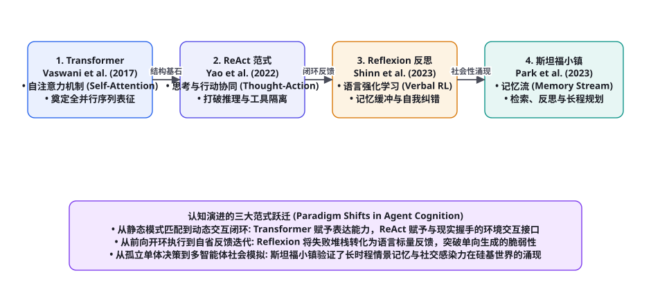
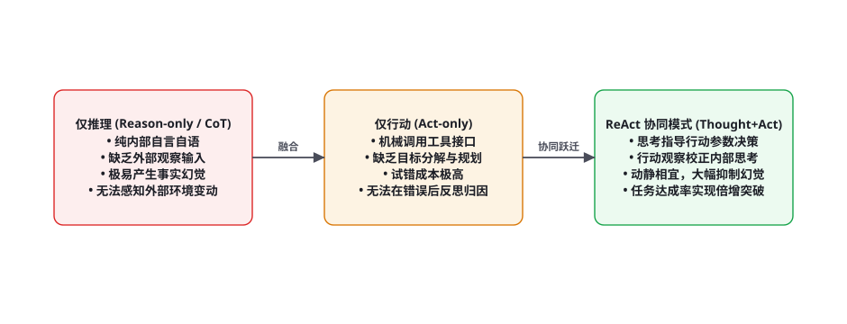

第 99 章 · 基础架构与认知演进经典论文研读
第十一部分论文篇开篇之作：在 AI 智能体波澜壮阔的演化史中，有几篇具有里程碑意义的奠基性论文，彻底改写了学术界与工业界对大语言模型能力的认知坐标。从 Transformer 的自注意力基石，到打破纯推理与纯行动隔阂的 ReAct 协同范式，再到通过语言自我反思实现闭环自愈的 Reflexion，以及验证长时程情景记忆与社会性涌现的斯坦福小镇（Generative Agents）。本章我们将以显微镜级的严密视角，系统精读这四篇载入 AI 史册的开山鼻祖论文，逐字拆解其核心动机、数学机理、实验设计与深远的历史历史回响。
认知演进脉络：从静态模型到自主社会性主体

回顾智能体的发展脉络，这四篇经典论文代表了四个至关重要的认知升维阶段：
- 第一阶段（表征突破）：《Attention Is All You Need》打破了 RNN 串行依赖，确立了以自注意力机制为核心的高维流形映射范式，为智能体提供了足够深邃的大脑；
- 第二阶段（与现实握手）：《ReAct: Synergizing Reasoning and Acting in Language Models》打破了单纯“自言自语”的思维链瓶颈，让模型学会了在思考指导下调用工具并根据环境回显校正自我；
- 第三阶段（自省与自愈）：《Reflexion: Language Agents with Verbal Reinforcement Learning》彻底摒弃昂贵的权重微调，创造性地将执行失败堆栈转化为自然语言“自我批评”，以文本形式沉淀经验；
- 第四阶段（长期记忆与社会涌现）：《Generative Agents: Interactive Simulacra of Human Behavior》设计了包含记忆流、检索、反思与规划的完整认知拟真架构，证明了多智能体自发形成社交网络与复杂人类协同的可行性。
论文精读 1：Transformer —— 智能体的通用计算基石
文献信息：Vaswani, A. et al. (2017). Attention Is All You Need. NeurIPS 2017. arXiv:1706.03762
核心痛点与历史动机：在 Transformer 诞生之前，序列建模完全被循环神经网络（RNN、LSTM）与卷积网络（CNN）所垄断。RNN 的致命缺陷在于其本质上是时间线性的（$h_t = f(h_{t-1}, x_t)$），无法在 GPU 上进行大规模全并行计算，且跨越上千步的长距离依赖会遭受严重的梯度弥散。
核心数学机理：缩放点积注意力（Scaled Dot-Product Attention）：
作者摒弃了一切循环与卷积结构，纯粹依靠 Query、Key、Value 的内积投影来刻画全序列中任意两个 Token 之间的直接因果关联：
$$\text{Attention}(Q, K, V) = \text{Softmax}\left( \frac{QK^T}{\sqrt{d_k}} \right) V$$
其中缩放因子 $\frac{1}{\sqrt{d_k}}$ 起到了至关重要的数值稳定性保障：当特征维度 $d_k$ 很大时，内积结果的量级会膨胀至极大，导致 Softmax 函数进入梯度极小的饱和死区，缩放操作成功使得内积的方差恒定维持在 1 附近。
对智能体科学的深远启示：Transformer 赋予了智能体处理异构多模态上下文的统一代数表达能力。无论是用户输入、环境截屏的图像 Patch、工具执行的控制台报错、还是历史长记忆，在 Transformer 内部都统一被抽象为可自由寻址、可全局自注意力加权的 Token 向量序列，构成了现代 Agent 系统的通用软硬件执行基座。
论文精读 2：ReAct —— 协同交织的思考与行动范式
文献信息：Yao, S. et al. (2022). ReAct: Synergizing Reasoning and Acting in Language Models. ICLR 2023. arXiv:2210.03629

核心痛点与历史动机：2022 年初，学术界分为两大阵营：一派热衷于思维链（Chain-of-Thought, CoT），让模型纯靠自言自语推导，但在处理需要外部最新知识的任务时频现严重事实幻觉（Hallucination）；另一派热衷于让模型直接输出 API 调用动作（Act-only），但缺乏中间思考过程导致盲目试错、无法从复杂的错误中归因。普林斯顿与 Google 团队提出了著名的 ReAct（Reasoning + Acting）范式。
形式化轨迹结构：将智能体的行动轨迹解剖为三位一体的循环三元组：
$$\tau = (t_1, a_1, o_1, t_2, a_2, o_2, ..., t_n, a_n, o_n)$$
其中 $t_i$ 为内部思考（Thought，不改变外部环境，负责分解子目标与反思），$a_i$ 为外部物理动作（Action，如 Search[API]），$o_i$ 为环境返回的客观真实观测（Observation）。
import re
class ReActAgentRunner:
def __init__(self, llm, tools_registry):
self.llm = llm
self.tools = tools_registry
def run(self, question: str, max_turns: int = 5) -> str:
prompt = f"""Solve a question answering task with interleaving Thought, Action, Observation steps.
Available tools: {list(self.tools.keys())}
Question: {question}"""
for turn in range(max_turns):
# 1. 大模型生成一轮思考与拟执行动作
response = self.llm.chat(prompt, stop=["Observation:"])
print(f"[Agent Step {turn+1} Output]:\n{response}")
prompt += response
# 2. 正则解析动作
match = re.search(r"Action:\s*(\w+)\[(.*?)\]", response)
if not match:
if "Finish[" in response:
return re.search(r"Finish\[(.*?)\]", response).group(1)
break
action_name, action_arg = match.group(1), match.group(2)
# 3. 真实物理调用工具获得客观观测 (负熵注入)
tool_func = self.tools.get(action_name)
observation = tool_func(action_arg) if tool_func else "Tool not found."
obs_str = f"\nObservation: {observation}\n"
print(f"[Environment Feedback]: {obs_str.strip()}")
prompt += obs_str
return "Task exceeded maximum turns."对智能体科学的深远启示：ReAct 奠定了现代所有主流 Agent 框架（LangChain、AutoGPT、BabyAGI）的通用交互交互协议。它从控制论（第 92 章）的层面上首次完美搭建了「内部思维调控」与「外部真实负反馈」的闭环通道。
论文精读 3：Reflexion —— 语言强化学习与无梯度自我纠错
文献信息：Shinn, N. et al. (2023). Reflexion: Language Agents with Verbal Reinforcement Learning. NeurIPS 2023. arXiv:2303.11366
核心痛点与历史动机：传统的强化学习（RL）要求通过反向传播更新数十亿参数的神经网络权重。这种做法不仅极其昂贵脆弱，而且在面对逻辑性极强的文本任务（如写代码）时，标量奖励（+1 或 -1）无法提供足够丰富的高维诊断信息。麻省理工学院与普林斯顿团队提出了 Reflexion：将失败视为最有价值的学习材料，用自然语言作为强化学习的反馈梯度（Verbal Reinforcement Learning）。
三大核心模块体系：
- 演员（Actor）：负责生成初次尝试轨迹 $\tau$（基于 ReAct 或纯 CoT）；
- 评估者（Evaluator）：环境客观判定器（如单元测试 Pytest），输出二值或标量信号（测试未通过，断言失败）；
- 自我反省模型（Self-Reflection）：核心创新点所在。当任务失败时，以专门的元认知 Prompt 引导模型研读历史错误堆栈，生成具体的、带批判性的自然语言建议并写入记忆缓冲区（如：「我此前将边界值判断写成了 i < n，导致数组越界，下次我应该在循环开头增加 i <= n-1 检查」）。
| 核心对比维度 | 传统强化学习 (PPO / DPO) | Reflexion 语言强化学习 (Verbal RL) |
|---|---|---|
| 学习反馈形式 | 一维标量奖励信号 ($r \in \mathbb{R}$) | 高信息熵的自然语言反思文本（结构化因果归因） |
| 参数更新机制 | 计算梯度张量并更新数千亿模型权重 ($\theta \leftarrow \theta + \alpha \nabla$) | 零权重修改（Zero Weight Updates），纯粹在上下文记忆缓冲区中追加沉淀 |
| 采样迭代效率 | 需要成千上万次采样探索方能收敛 | 仅需 2~3 轮自反思尝试，复杂代码修复成功率从 67% 暴涨至 91% |
论文精读 4：Generative Agents —— 斯坦福小镇与社会性涌现
文献信息：Park, J. S. et al. (2023). Generative Agents: Interactive Simulacra of Human Behavior. UIST 2023. arXiv:2304.03442
核心痛点与历史动机：此前的智能体大多处于单打独斗状态，且缺乏跨越数周乃至数月真实时间的长期记忆能力。斯坦福大学与 Google 合作，在《模拟人生》风格的 2D 像素小镇中放入了 25 个具备自主意识的生成式智能体（Generative Agents），探索长时程情景记忆与人类社会行为的自主涌现。
奠基性的三层记忆架构：
1. 记忆流（Memory Stream）：包含数千条按时间戳排列的原子记忆片段列表；
2. 三维检索加权函数（Retrieval Function）：在做决策时，不盲目全量读取，而是根据以下公式动态加权提取相关度最高的 Top-K 记忆：
$$\text{Score}(m) = \alpha_{\text{recency}} \cdot \text{Recency}(m) + \alpha_{\text{importance}} \cdot \text{Importance}(m) + \alpha_{\text{relevance}} \cdot \text{Relevance}(m, q)$$
其中时间新鲜度 $\text{Recency}$ 采用类似艾宾浩斯的指数衰减（第 93 章），重要性 $\text{Importance}$ 由大模型在记忆写入时预先打分（如吃早饭重要性为 2，向伴侣求婚重要性为 10），相关性 $\text{Relevance}$ 采用余弦向量相似度。
3. 高级反思与递归沉淀（Reflection）：当近期累积记忆的重要性总和突破阈值时，触发深层反思：大模型审视最近的 100 条记忆，提炼出 3 个高阶抽象结论并重新写回记忆流，实现从具体情景向抽象人格的跃升。
震惊世界的社会性涌现：实验中，研究者仅为其中一个角色设定了「打算举办情人节派对」的初始念头，没有任何人为硬编码脚本。在连续运行多天后，智能体之间自发展开交谈、互通八卦、相约结伴采购装饰品，并在情人节当天自主组织了盛大的聚会！这项工作在人类科学史上首次实证了复杂社会性协作在纯 LLM 智能体系统中的自发涌现。
深度解构 1：Transformer 的多头注意力数学矩阵与复杂度瓶颈
在《Attention Is All You Need》中，缩放点积注意力不仅是一个单流操作，而是被拓展为多头注意力（Multi-Head Attention, MHA）机制。多头的核心哲学在于：允许模型在不同的表示子空间（Representation Subspaces）中同时关注不同位置、不同语义层级的信息（例如某些注意力头专门追踪语法代词指代，另一些头专门捕获跨从句动宾因果）：
$$ ext{MultiHead}(Q, K, V) = ext{Concat}( ext{head}_1, ..., ext{head}_h) W^O$$
$$ ext{where } ext{head}_i = ext{Attention}(Q W_i^Q, K W_i^K, V W_i^V)$$
其中投影矩阵参数为 $W_i^Q \in \mathbb{R}^{d_{ ext{model}} imes d_k}$, $W_i^K \in \mathbb{R}^{d_{ ext{model}} imes d_k}$, $W_i^V \in \mathbb{R}^{d_{ ext{model}} imes d_v}$，以及输出汇聚矩阵 $W^O \in \mathbb{R}^{h d_v imes d_{ ext{model}}}$。在标准 Transformer-Base 中，通常设定 $h=8$ 个头，每个头的特征维度 $d_k = d_v = d_{ ext{model}} / h = 64$。
| 序列运算架构 | 时间复杂度 (每层) | 最小顺序操作数 (并行度) | 最大路径长度 (信息传递步长) |
|---|---|---|---|
| 循环网络 (RNN / LSTM) | $O(N \cdot d^2)$ | $O(N)$ (必须按时序串行推进) | $O(N)$ (长程信息衰减极快) |
| 卷积网络 (CNN / ByteNet) | $O(k \cdot N \cdot d^2)$ | $O(1)$ (高度并行) | $O(\log_k(N))$ (需通过膨胀卷积跨步) |
| 自注意力 (Self-Attention) | $O(N^2 \cdot d)$ | $O(1)$ (完全由 GPU 矩阵乘法并行) | $O(1)$ (全序列任意两 Token 间直连) |
请特别注意其中的最大路径长度（Maximum Path Length）：在 RNN 中，第 1 个 Token 的信息要传递给第 $N$ 个 Token，必须穿透 $N$ 个中间循环层，信息丢失严重；而在 Transformer 中，由于每一个 Token 都能与全序列的所有 Token 直接计算点积，其逻辑信息传递距离恒定为 $O(1)$！正是这一卓越的拓扑特性，赋予了现代 Agent 系统瞬间从长达数万字的上下文历史中准确回溯关键前置条件的神奇能力。
深度解构 2：ReAct 消融实验方法论与 ALFWorld 具身测试
在 ReAct 论文中，姚顺宇（Shunyu Yao）等人为了证明「思考与行动交织」的必要性，在两大极具挑战性的基准——多跳知识问答（HotpotQA）与文本具身交互环境（ALFWorld）上，进行了极其详尽严格的消融对比实验：
| 对比范式 | HotpotQA 准确率 | ALFWorld 任务成功率 | 典型的致命翻车模式 |
|---|---|---|---|
| 仅行动 (Act-only) | 27.4% | 45% | 目标迷失：在环境中机械地执行拿取、放下物品，却忘记了终极目标，陷入盲目试错 |
| 仅推理 (Reason-only / CoT) | 33.6% | 无法完成交互 | 事实幻觉：凭空捏造不存在的事实（如编造虚假人名与历史），无法与外部环境闭环 |
| ReAct 协同模式 (完备版) | 35.1% (自愈微调达 43%) | 71% (相对提升 57%!) | 动静相宜：思考负责规划子步骤与诊断错误，行动负责精准执行与注入真实观测 |
在具身交互游戏 ALFWorld 中，智能体必须在虚拟房间中完成复杂的家庭杂务（例如「把一个热过的苹果放到冰箱里」）。仅行动（Act-only）基线模型在拿到苹果后，由于缺乏中间思考状态的动态维持，往往直接把生苹果放进了冰箱；而 ReAct 模型在动作前会显式插入一条 Thought："Thought: I need to heat the apple before placing it in the fridge. I should find a microwave first."，成功引导自身先走向微波炉完成加热，再走向冰箱，展现出了清晰、具备因果链条的理性行为。
深度解构 3：Reflexion 的反思记忆缓冲区与剪枝动力学
诺亚·欣恩（Noah Shinn）等人在设计 Reflexion 架构时，面临的最大技术挑战是：如何防止多轮自我反思（Self-Reflection）产生的批评文本挤爆大模型的有限上下文窗口？
如果系统在连续失败 5 次后，把每次反思的长篇大论全部塞入当前 Prompt，会导致注意力被过去的多次失败严重污染。Reflexion 创造性地引入了滑窗滑动淘汰与经验正交剪枝机制（Memory Buffer Sliding & Pruning）：
记忆缓冲区容量被硬性限制为固定大小 $\Omega_{ ext{mem}} \le 3$。系统仅保留最近 3 次在不同方向上尝试失败的教训，且强制要求每次反思的篇幅压缩在 1~3 句话以内。其伪代码与数据流控制算法如下：
class ReflexionFramework:
def __init__(self, actor_llm, evaluator_tool, self_reflect_llm, max_trials: int = 4):
self.actor = actor_llm
self.evaluator = evaluator_tool
self.reflector = self_reflect_llm
self.max_trials = max_trials
self.memory_buffer: List[str] = [] # 语言经验记忆池，容量最多3条
def solve_task(self, task_description: str) -> Tuple[bool, str]:
for trial_idx in range(self.max_trials):
print(f"=== 开始第 {trial_idx + 1} 次尝试 ===")
# 1. 组装输入: 任务描述 + 过去失败的精炼反思教训
reflections_context = "
".join([f"- 历史教训: {r}" for r in self.memory_buffer])
actor_prompt = f"任务: {task_description}
历史反思教训:
{reflections_context}"
# 2. 演员模型执行生成轨迹
trajectory = self.actor.generate_solution(actor_prompt)
# 3. 评估者客观判定 (如运行自动化单元测试)
is_success, eval_logs = self.evaluator.evaluate(trajectory)
if is_success:
print("🎉 任务圆满解决！成功通过所有断言。")
return True, trajectory
# 4. 任务失败: 触发自我反思 (Self-Reflection)
print("❌ 尝试失败，正在进行因果归因反思...")
reflect_prompt = f"""分析本次执行失败的根本诱因:
任务目标: {task_description}
执行轨迹: {trajectory}
报错回显: {eval_logs}
请用 2 句话指出你的核心错误，并给出下一次必须采取的规避策略。"""
new_reflection = self.reflector.generate(reflect_prompt).strip()
# 5. 记忆流滑动更新: 保持最多 3 条最精炼的教训
self.memory_buffer.append(new_reflection)
if len(self.memory_buffer) > 3:
self.memory_buffer.pop(0)
print(f"在 {self.max_trials} 次尝试后仍未达成目标。")
return False, trajectory这种纯粹在文本层运行的自进化循环，使得智能体在完全不触碰底层反向传播与浮点梯度的情况下，展现出了近乎生物级的自主演进与适应韧性，成为现代长时程自主编码智能体不可或缺的核心模块。
深度解构 4：斯坦福小镇的环境碰撞拓扑与对话自发合成
在朴俊成（Joon Sung Park）等人的经典论文中，构建 25 个具有人格的虚拟角色并不仅仅是在后台跑 25 个独立的大模型 API。为了让角色在《模拟人生》的二维世界中产生真实的物理交互（如避免两个人穿墙重叠、在咖啡馆相遇时自然打招呼），系统在底层设计了一套基于空间拓扑图的环境碰撞与感知广播引擎：
Lin Family House (住宅)
└── Common Room (客厅)
├── Wooden Desk (木桌)
│ └── Laptop (笔记本电脑) [状态: 正在休眠]
└── Coffee Table (茶几)
└── Coffee Maker (咖啡机) [状态: 正在煮咖啡]
Hobbs Cafe (霍布斯咖啡馆)
└── Dining Area (就餐区)
└── Round Table #1 (一号圆桌) [状态: 约翰·林正坐在椅上阅读]当一个智能体在小镇中移动时，系统每秒计算一次其视野半径内（例如 5 格像素范围内）的其他角色与物品状态。如果检测到角色 A 与角色 B 处于同一子房间内，且两人的当前动作均允许社交打断（例如不是在深度睡眠状态），系统自动触发对话自发合成流水线（Dialogue Synthesis Pipeline）：
第一步：检索双方的关系与近期记忆：角色 A 检索关于角色 B 的最后一次交谈记录，角色 B 检索对角色 A 的初始印象标签；
第二步：自回归交替生成台词：大模型模拟真实的自然语言对话，交替输出双方台词，并在每句话后评估「对话是否应当自然结束」；
第三步：双向记忆入库：对话结束后，完整对话的精简摘要作为两条独立的情景记忆，分别写入角色 A 与角色 B 的记忆流中，成为未来深层反思的种子。
这种将严密的底层树状空间数据结构与上层认知记忆模型无缝咬合的系统工程设计，正是《Generative Agents》论文历经数年依然在学术界与工业界被奉为圭臬的根本原因。
四大奠基之作的横向交织与当代生产级架构映射
将这四篇改变历史走向的经典论文放在同一个全景坐标系中审视，我们会惊讶地发现：一个现代顶尖的商用智能体系统（如 Claude 3.5 驱动的 Computer Use、OpenAI 的 Operator 或开源的 SWE-agent），在底层实际上正是这四种思想的高度集大成者：
| 生产级 Agent 核心模块 | 继承的经典论文核心遗产 | 在现代工业级系统中的落地形态 | 消除的核心工程隐患 |
|---|---|---|---|
| 多模态执行中枢 | Transformer (Vaswani 2017) | 视觉 Token 与文本 Token 在统一多头注意力中全并行交互 | 消除异构多模态信号的信息割裂，支持端到端长上下文寻址 |
| 工具调度与环境闭环 | ReAct (Yao 2022) | 结构化 Function Calling 契约协议与 Observation 严格拦截 | 消除盲目试错调用，确保每一步工具执行均在思考指导下推进 |
| 报错自愈与测试自驱动 | Reflexion (Shinn 2023) | 利用 Pytest 单元测试断言失败堆栈，在上下文中生成因果修正建议 | 避免在同一语法或逻辑错误上反复打转死锁，实现无需微调的在线自愈 |
| 跨会话长期记忆中枢 | Generative Agents (Park 2023) | 时间新鲜度、重要性打分与向量相关性三维加权动态记忆流 | 彻底打破单次会话长度限制，实现用户偏好与长期工程知识的终身固化 |
没有 Transformer 的全并行注意力计算，智能体就失去了处理高维复杂上下文的大脑；没有 ReAct 的动静协同，智能体就会沦为只能闭目空想的幻觉机器；没有 Reflexion 的自省自愈，智能体就会在第一处代码报错前彻底瘫痪；而没有 Generative Agents 的长记忆与社交拟真，智能体就永远无法迈入跨越时间尺度的多主体协同社会。这四篇论文不仅是学者们书架上的珍贵典藏，更是每一位志在打造世界级智能体系统的工程师心中永恒燃烧的理论灯塔！
学术文献研读的方法论跃迁：如何从经典中提炼下一代 Agent 架构
在人工智能领域，阅读顶级论文绝不应仅仅停留在“记诵结论与跑通开源 Demo”的初级层面上。真正的顶级系统架构师在研读一篇开创性论文时，通常采用「逆向工程与假设推演」三步批判法：
第一步（时代背景与理论天花板逆推）：作者在发表该论文的那个历史节点，学术界正普遍面临什么无法逾越的共同痛苦？例如在研读 Transformer 时，必须深刻体会到当年使用两层双向 LSTM 训练长文本时，GPU 计算利用率低下、训练周期长达数周、且长距离依赖必然衰退的绝望感。唯有深切体察到旧范式的致命缺陷，才能真正领会新机制为何能够掀起滔天巨浪。
第二步（寻找核心简洁性与奥卡姆剃刀）：最伟大的论文往往具有惊人的简洁性。《Attention Is All You Need》彻底删掉了循环与卷积，仅保留点积；《ReAct》仅仅在输出格式中插入了一个 Thought:；《Reflexion》仅仅将错误日志拼回了 Prompt；《Generative Agents》仅仅用一个三项加权线性公式计算记忆重要性。这种“大道至简”的设计哲学提醒我们：很多复杂的堆砌工程往往是方向错误的遮羞布，真正具备革命性突破的架构，往往能够用极其优雅纯粹的简单机制击穿最复杂的认知壁垒。
第三步（前瞻性推演与边界反思）：这篇论文成功掩盖了什么新的次生矛盾？例如 Transformer 带来了注意力平方复杂度与 KV-Cache 显存膨胀难题（进而催生了第 13 章的线性注意力与第 78 章的缓存经济学）；ReAct 带来了调用工具超时与上下文污染问题；Reflexion 带来了自欺欺人伪反思的风险；Generative Agents 带来了高昂的 Token 账单与社交漂移。学会在论文的掌声中敏锐捕捉下一代技术的潜在痛点，正是每一位研究者从跟随者蜕变为领航者的核心秘密武器。
在这个信息爆炸的时代，深入精读具有范式转移意义的奠基之作，不仅能够让我们免受各种浅层工业营销包装术语的浮躁喧嚣干扰，更能让我们的工程设计深深扎根于坚不可摧的底层第一性原理之上。经典论文之所以永恒，正是因为它们在混沌未明的黎明破晓时刻，为全人类指明了通往智能本质的坚定航向。
本章精读的四篇经典论文构成了全书最核心的基础架构骨架：Transformer 解决了感知与表征，ReAct 解决了工具调用与环境闭环，Reflexion 解决了自省自愈，Generative Agents 解决了长程记忆与社会协同。下游直接为第 100 章（规划、记忆与长上下文核心论文研读：ToT、MemGPT、AgentBench）与第 101 章（代码与工具调用核心论文研读）奠定权威理论范式。
本章小结
- Transformer 架构奠定了现代智能体的通用神经基石，以缩放点积注意力打破了串行依赖，构建了统一的多模态时空上下文处理中枢。
- ReAct 创造性地将思考（Thought）与行动（Action）紧密交织，以思考引导工具决策，以环境回显校正逻辑，成为全球智能体交互的黄金通用范式。
- Reflexion 开创了无梯度更新的语言强化学习新时代，将失败堆栈转化为结构化反思沉淀在上下文中，以极轻的开销实现惊人的自我纠错。
- 斯坦福小镇（Generative Agents）构建了包含记忆流、三维检索加权与高级反思的完备认知架构，首次实证了多智能体长程社会协同的自发涌现。
自测题
- 在 Transformer 的自注意力机制中，缩放因子 $\frac{1}{\sqrt{d_k}}$ 起到了怎样的数学稳定作用？如果不加缩放，在高维情况下会导致什么现象？
- 简述 ReAct 范式相比于单纯的“思维链（CoT）”与单纯的“行动调用（Act-only）”各自克服了什么致命缺陷？写出其循环推进的三元组形式。
- 在 Reflexion 框架中，为什么说“自然语言反思”可以被视作一种高维强化学习梯度？它与传统的 PPO 权重更新相比有哪些决定性优势？
- 写出斯坦福小镇（Generative Agents）中三维记忆检索评分公式，并解释新鲜度（Recency）、重要性（Importance）与相关性（Relevance）如何协同工作？
参考文献与延伸阅读
- Vaswani, A. et al. (2017). Attention Is All You Need. NeurIPS 2017. arXiv:1706.03762
- Yao, S. et al. (2022). ReAct: Synergizing Reasoning and Acting in Language Models. ICLR 2023. arXiv:2210.03629
- Shinn, N. et al. (2023). Reflexion: Language Agents with Verbal Reinforcement Learning. NeurIPS 2023. arXiv:2303.11366
- Park, J. S. et al. (2023). Generative Agents: Interactive Simulacra of Human Behavior. ACM UIST 2023. arXiv:2304.03442
- Wei, J. et al. (2022). Chain-of-Thought Prompting Elicits Reasoning in Large Language Models. NeurIPS 2022. arXiv:2201.11903
- Kojima, T. et al. (2022). Large Language Models are Zero-Shot Reasoners. NeurIPS 2022. arXiv:2205.11916